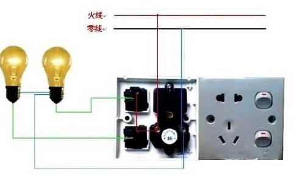

我们家庭常用的就是单相电，由一条火线和一条零线构成回路，电压220伏。
两相电就是两条火线，使用的设备较少，常见的有电焊机，加热管。两条线之间的电压是380伏。
三相电就是三条都是火线，每两条线之间的电压都是380伏，在工业上广泛使用，最常见的设备就是电动机。
我们国家现行的供电系统有TT供电系统，TN供电系统，IT供电系统。三种不同的方式适用于不同的场合。民用电以TN供电系统为主，分为TN-S，TN-C，TN-C-S三种。
TN-S就是我们常说的三相五线供电制，有三条相线，一条零线，一条地线组成。从变压器低压侧出来，零线、地线、火线分别单独敷设，互不相干，各司其职。火线和零线构成工作回路，地线作为保护装置。这是目前最安全实用的一种供电系统。
TN-C就是三相四线供电系统，只有三条相线和一条零线，没有保护地线。广大的农村地区，偏远的郊区等人口分散，远离变压器的地方大都采用这种供电方式。
TN-C-S是对TN-C供电方式的一种补充，它的前半段是TN-C，后半段是TN-S。就是主线路没有地线，在配电箱的地方制作地线。
TT系统主要用于施工场地等的临时用电，IT系统主要应用于一些特殊场合，比如矿山，医院，在这里就不细说了。
IT系统
零线和地线的由来。
变压器低压侧有两种连接方式，星形连接和角形连接。
在星形连接变压器中性点接地的供电系统中，从变压器中性点单独引出两条线，一条作为保护线，不参与工作，正常情况下没有电流通过，主要连接在设备的金属外壳，用来引导漏电电流，避免人体触电，这就是地线，地线的颜色为黄绿双色。一条作为工作中性线，因为与大地的电位差为零，所以俗称零线。零线有两个作用，一个是平衡三相电流，一个是作为220伏的工作回路。正常情况下零线对大地的电压为零，如果三相电流不平衡导致中性点漂移，零线就会有电压。如果工作零线断路，接近设备一端的零线就会带有跟火线一样的电压。如果总零线断路，不同用户之间就会出现“窜相”，有些设备就要承受高于220伏多得多的电压，甚至直接烧毁设备，所以零线是不允许单独安装保险和开关的。
怎么区分火线，地线和零线。
三条火线的颜色分别是黄绿红，用ABC或者L1L2L3标注，每两条火线之间的电压为380伏，每条火线与零线地线之间的电压为220伏，电阻为无穷大。
通常用蓝色和黑色线做零线，用字母N标注，零线和地线相通，用万用表蜂鸣挡测量会响。
地线是黄绿双色线，连接在设备的金属外壳，与火线的电压为220伏，跟零线之间没有电压，用字母PE标注，被称为生命的保护线。
大家通常认为单相电是指一根火线＋一根零线组成的供电方式，两相电是指两根不同相的火线组成的供电方式，三相电是指三根不同相火线组成的供电方式。
其实“两相电”这种说法是错误的！准确来说，我国供电方式中只有单相电和三相电，没有两相电。而我们常说的两相电，正确的说法应该叫单相380V。为啥说两根火线组成的供电方式叫单相380V，而不叫两相呢？
如下图所示，我们分别来测量一下单相220V设备和单相380V设备两端的波形图？
然后把两个示波器测得的波形图拼合在一起，得到如下图形：
从上图来看，两个电路都只有一个电压（电流）波形，而且它们的相位、频率一致，只是最大值不一样而已。那三相用电设备它的波形图又是怎么样呢？
三相设备测得的波形如图
从上面图形可以看出，三相线路中有三个电流（电压波形），它们相位不同，相差120°。
所以一个供电线路中是单相电还是三相电，那就看该线路中有几个相位不同的波形图。我们可以简单的理解成：一个设备是单相电还是三相电，看它能找到几种电压；如果只能找到一种电压那就是单相电，如果能找到三种电压就是三相电。
比如，L+N组成的供电线路，它只能提供220V电压，所以它是单相220V；L1+L2组成的供电线路，它只能提供380V电压，所以它是单相380V；L1+L2+L3组成的供电线路，它可以提供三种电压，所以它是三相380V。
农村里很多人叫市电叫做两相电。其实这种说法是错误的。要想说清这个几相电。就要说说电的来源。电是发电机发出来的发电机一般有三种线圈，发电机一般有两种接法分别是三角型和y型(星型)，一般常用的是y型，中性线接出来作为零线。剩下三端接出来叫做相线也就是火线。零线与相线之间的电压为220V。相线与相线之间的电压为380V。从发电厂出来之后。为了减少途中的损耗。 会通过变压器将电压升高。输送到各地。在进行降压之后，送入每位住户家中。不要分为三相四制还有三相五制。三相四制就是有三根相线和一根零线组成。三相五制是在三相四制的基础上加上一根地线。
单相电对大多数人来讲，可以说是最常见的一种交流电源，我们家庭常用的这个电源就叫做单相交流电，简称为单相电，它是由一根相线和一根零线而组成的。
而所谓的三相电，就是由三根相线所组成的电源，他主要是给三项负载提供电源的。工业上常用的三项异步电机，所用到的电源就是三相交流电，通常我们用黄绿红三种颜色来对这三根线线进行区分。
也就是说，并不是所有的负载都需要零线，三根相线也能独立地为三项负载提供电源，驱动负载的运行。
在三相四线制的供电系统当中，它是由三根相线和一根零线组成的，我们任意一根相线和零线所组成的这种电源就称之为单向交流电。
而民间所说的所谓的两相电，其实说的就是两根相线所组成的这种交流供电方式。虽然这种电源，它是由两根相线所组成的，而且这两根相线之间电压为380伏，但这种电源也是单相交流电。
这种电源通常用在我们的电焊机，也有交流接触器的线圈，用的是这种380伏的单相交流电，接的是两根相线。
如果我们用示波器来进行检测的话，就会看到示波器的屏幕上呈现出一种完美的单相交流正弦波的波形，只不过这种波形的最大值和我们平时所说的单向交流220伏的最大值相比较的话，它的最大值要大一些，其他的诸如频率都是一样的，也是50赫兹。
所以，如果你是一位专业的电工，就不要说什么两相电了，只能说单相380伏。
在我们生活的这个现实世界中，电力系统与我们的生活息息相关，电力的生产过程从发电厂出发，经过升压变电站，送入输电线路，再到几个不同等级的降压变电站，最终到达用户，这个过程是不同电压的变化过程，有点像水的输送过程，所以电压的大小是电力系统的关键所在，它决定了我们的电力设备及用电设备的电压水平，而三相电源系统是这个过程中的主要部分，这三相一般称为A相，B相，C相，有时候也叫L1相，L2相，L3相，标识的颜色为黄色，绿色和红色。
当电源到达终端配电站时，一般是从10kV降压到0.4kV，此时我们使用的变压器叫配电变压器，接线形式一般为Dyn11，也就是高压侧为三角形接线，低压侧为星型接线。
我们都知道星型接线有一个公共端，变压器低压侧公共端引出的线缆，我们称之为PEN线，它与三个相线一起构成了低压系统的三相四线系统。当这四根线进入建筑物的低压配电室时，在低压进线柜处将PEN线分离成两根线（在此处有且只有一个接地点），一根是PE线（俗称地线），一根是N线（中性线，俗称零线）。从这里开始我们就有了三相380V电源和单相220V电源，380V一般给电动机等一些功率等级≤200kW的用电设备供电，220V给灯具等一些更小功率等级的电器设备供电。
交流电是世界上使用最广泛的一种电流形式，交流电是指电流方向随时间作周期性变化的电流。
直流电我们也很熟悉，直流电的电流在流动过程中电流方向不会发生变化，并且我们知道，电流是从正极流向负极，如果我们用这个形式来理解交流电的话，就相当于交流电的正负极在不停的变化，如果交流电的频率是50HZ的话，按照这个逻辑，那么正负极就会在一秒钟内变化100次，但这样理解又会存在一个问题，就是既然两根线不停地转变电压，那么两根线的性质应该是一样的呀，却为什么又分零线和火线，并且我们触摸火线会触电，触摸零线却不会触电呢？那么我们就来捋一捋家用交流电中零线和火线的关系。
我们先从交流发电机讲起，发电机主要是由磁体和线圈组成，初中我们就学过，当线圈切割磁感线时就能够产生感应电动势，也就是有了电压，当我们接通电路时，就有了电流。
不过连续转动线圈有一个问题，就是线圈是要外接电路的，因此转动线圈这个操作不太方便，我们知道，运动是相对的，所以我们可以让线圈静止，让磁体来运动，磁体在外力的作用下不停转动从而发电，下面这个图就是最简单的模型。对于这种单套线圈产生的交流电来说，的确没有火线和零线之分，这两根线性质完全一样，如果我们用手触摸到任何一条线都会触电。
但这种方式发电没有完全利用好磁铁动力，因为只有当磁体转到竖直方向部分区域时，才会形成一定的电流，在其它角度，没有很好利用到磁铁的动力，那么这个时候就需要改造一下发电机，就是多绕几组线圈，也就是我们现在所使用的三相发电机，利用三组线圈发电，每一组线圈相差120°。模型就类似于下面这个图。
通过这种接法，就可以实现三个线圈同时发电，并且由于这些线圈的相位差为120°，因此各组线圈产生的电压的相位差也是120°。你会发现如果使用三组线圈就要接出6根电线，对于远距离输电来说，将会大大增加线缆的使用量，成本高昂，那么有什么方式可以改变这种状况呢？那就是换一种线圈的接法，我们依旧保持线圈的位置不动，将线圈的一端作为公共接点，并进行接地，我们把这根公共的线称为中性线，而发电处的大地与我们所处的大地是相连的，因此直接输出三根线就可以了，用户这一端的零线实际上就是接入大地的一根线（这是零线不触电的主要原因）。
也就是说，一个发电机可以输出三套供电系统，每一个系统供应不同的用户，并且这三组电路的用电功率通过电网的调配基本保持在平衡状态。所以，按照这个标准，我们可以计算一下我们三组电路的总电流是多少。
假如三组线路中功率一样，我们可以将三组电路等效于接入了三个一样的电阻，所以各线路中电流的关系与电压的关系一样（根据欧姆定律），按照这个方式计算（需要使用三角函数计算）我们会得到接地线的电流为零，所以实际上电流是在三根火线（发电机接出的四根线中，一条为中性线接地，三条为火线）上循环。而零线也就是接地线上基本无电流。所以，这就是火线与零线的差别，实际上零线就是一根接地线，并且在三个供电线路功率基本一致的情况下，零线的公共端是没有电流的。
所以家用交流电实际上是三相交流电，电流基本是在三根火线之间流通，而并不是我们简单想象的单相交流电，如果是那种的话，的确是没有零线和火线的区别。
最后总结一下，首先零线是接地线，所以零点的电势实际上为零（因为大地的电势为零）所以当我们触摸零线时，零线与大地是没有电势差的，所以不会触电，另方面，由于三个供电系统之间电流是相互调和的，所以零线的总端口也就基本不会存在电流，这就是零线与火线的根本区别。
家庭用电都是交流电，为什么有零线和火线的区别？
1⃣️我们小区的变压器上有三根上万伏的高压电输入了初级线圈，按照匝数比，次级三相得到380V交流电压。
2⃣️因为次级线围是星形接法，三组线圈六根头，三根头并接叫中性线，中性线与每根尾即是220V，尾与尾都是380V。
3⃣️为了节省材料，又充分利用大地这个良好的导体，就将中性线埋入大地，再输送出去就改叫零线。
4⃣️变压器输出（二次侧）三组线圈，是由一次侧电变成磁，当二次侧加负载时，磁即转成电，只有加了负载才产生电流循环。有人说零线没有电压，零电位只凭一根入地的线哪来电压？因为它没有电压差，肯定量不到电压，如果火线与地测量就显示电的存在。
5⃣️有人会问：火线上为何电笔测到氖管亮？那是你的身体与火线有了电势差，如果电工站在绝缘体上，一手抓火线，另一手拿测电笔去测大地，这大地也能使测电笔发光。（只讲原理，不去模仿）
6⃣️零线与大地相接，阻抗在4欧以下都为接触良好，大地是个良好的导体，有了中性线入地能对三相电调节平衡，这就是零线与火线的区别。
这里有朋友问，家庭用电都是交流电，为何会有零线和火线的区别？
俗话说，“隔行如隔山”，没有电工基础的朋友提出这样的问题并不奇怪。

我们通常使用的电源有两种，交流电和直流电。交流电有零火线之分，直流电有正负极之分。
我们重点阐述交流电的零火线是如何而来的。
电厂的发电机都是三相绕组，每相绕组引出一根电源线，就是我们常说的三相电，这就是火线的来源。注意观察的朋友肯定会发现，那些翻山越岭，穿城走巷的高压线都是三条线。
那么零线是怎么来的呢？
高压线经过长途跋涉来到降压站，降压站再把电力输送到各用电区的变压器。从变压器的低压侧出来才有零线。
三相火线理论上是互相平衡的，但是由于种种原因，很难达到理想的平衡。为了解决这个问题，电力工程师们从变压器的中性点引出一条线来作为三相不平衡时的电流回路，这条线就是中性线。
由于中性线在变压器处和变压器外壳的接地线连接在一起，它的电位也为零，因此俗称零线。
我们把相线指定为高电位，把大地指定为零电位。
日常使用的变压器输出的电压多为380伏。也就是两条相线之间的线电压为380伏，每条相线跟大地（零线）的电压为220伏，称为相电压。
我们国家的生活用电通常使用TN_S供电系统。
这种供电系统中变压器低压侧出来就是5条线，三条火线，一条零线，一条地线。因为家庭常用的都是220伏的用电设备，所以我们的进户线通常是三条线，一条火线，一条零线，一条地线。
火线和零线构成电路回路，属于工作线。地线作为保护线，这就是我们家庭用电的基本配置。
零线和火线的区别主要在于对地电压。火线对地电压为220伏。零线对地电压为零伏，因为零线跟大地没有电位差。这就是它们的区别。
零线在电路回路正常的情况下不会电人。但是如果零线断了，靠近设备一端的零线就跟火线一样，这时如果人们触摸到零线也会触电。
如果总零线断了，不同相线用户之间的相线就会通过用电设备形成回路，这时候我们的用电设备就要承受高于220伏甚至380伏的电压，时间稍长一点就会损坏设备。
所以零线是绝对不能装保险丝，同时也不能单独安装小型断路器，避免断零造成财产损失。
变压器出来有三根相线，也就是三根火线，零线也是从变压器出来的，但不是发电发出来的。
而是根据三根火线，角度互为120度，其中两根火线的向量和第三根火线大小相等，方向相反，相互抵消结果为0，所以我们就和第三根方向相反引出一根导线，这根线就称为零线。
如图是低压配电系统中常用的一种，采用三相变压器，三相变压器原边有三个高压线圈（图中未画出），副边有三个低压线圈。一般原边三个线圈接成三角形，副边三个线圈接成星形，就是把三个线圈的尾端连接在一起，并在星形连接点接地。
a、b、c三个线圈的首端引出三根线L1、L2、L3称为相线，由于三个线圈的尾端已连接在一起，只需引出一根线N，这根线的起始端是接地的，与大地等电位对地电压为零，所以称为零线，而三根相线的对地电压都是220伏，所以称为火线。可见三相变压器副边有三根火线一根零线，俗称三相四线。火线与火线之间的电压是380伏，主要供三相电动机使用，每根火线与零线之间的电压是220伏，主要供照明及家用。但零线只是我们的习惯叫法，三相配电变压器因低压侧三个线圈尾端连接在一起，从该端引出的这根N线在国家标准中称为中性线。
至此我们已知道为何家里用的电分火线与零线了，零线的主要特证是接了地，对地电压为零，接地的原因是为了安全，防止高压窜入低压造成的不良后果。
火线从发电机站出来的，比较长。零线是从变压器接地出来的，没有电压（相对）。要达到供电效果一条就可以了。380v点是三条相位查120度的220v组成的。就是三条火线。